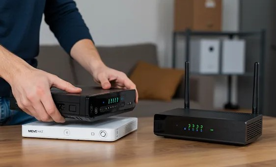
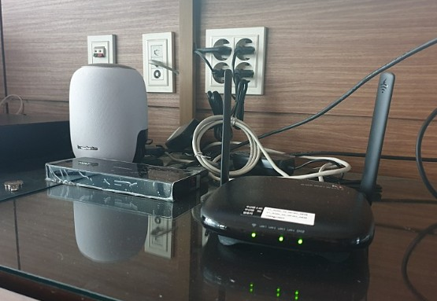

약정 종료·할인반환금·신규가입 혜택과 가족결합까지 한 번에 확인

인터넷 이전설치는 현재 사용 중인 인터넷과 IPTV 계약을 유지한 채 설치 주소만 기존 집에서 새집으로 변경하는 절차입니다. 통신사 고객센터나 공식 홈페이지에서 새 주소와 이사 날짜를 등록하고 기사 방문 일정을 예약하면, 새집의 통신 설비 상태를 확인한 뒤 모뎀, 공유기와 셋톱박스를 다시 연결합니다.
상품과 약정을 그대로 유지하기 때문에 새로 가입하는 것보다 절차가 간단할 수 있습니다. 하지만 새 주소에서 현재 통신사의 망을 이용할 수 없거나, 같은 통신사라도 건물 설비에 따라 사용 가능한 속도와 설치 방식이 달라질 수 있습니다. 따라서 주소만 옮기면 이전과 완전히 같은 환경이 유지된다고 단정해서는 안 됩니다.
인터넷 이전설치 비용은 통신사, 가입 상품과 신청 시점에 따라 달라집니다. 인터넷 단독인지 IPTV와 전화를 함께 사용하는지, 평일과 주말 중 언제 기사가 방문하는지, 기본 배선만 필요한지 추가 작업이 필요한지에 따라 실제 청구금액이 달라질 수 있습니다.
오래전에 가입한 상품은 현재 판매되는 상품과 설치비 기준이 다를 수 있습니다. 검색 결과에 나온 한 가지 금액만 믿기보다 본인의 가입 상품명과 계약일을 기준으로 고객센터에서 이전설치 비용을 확인해야 합니다.
| 비용이 달라지는 항목 | 확인할 내용 | 추가비용 가능성 |
|---|---|---|
| 상품 구성 | 인터넷 단독, 인터넷+IPTV, 전화 포함 여부 | 설치할 장비와 작업 항목 증가 |
| 방문 날짜 | 평일·주말·공휴일 설치 조건 | 통신사 정책에 따른 차이 |
| 건물 설비 | 단자함, 광케이블, 벽면 포트 상태 | 추가 배선 또는 설치 위치 변경 |
| 장비 | 모뎀, 공유기, 셋톱박스 교체 여부 | 장비 임대료와 교체 비용 확인 |
| 이전 주소 | 현재 통신사의 설치 가능 여부와 속도 | 설치 불가 또는 상품 변경 가능성 |
이 다섯 가지를 확인하지 않고 기사 일정부터 예약하면 약정이 끝난 상태에서 더 유리한 재약정이나 신규가입 조건을 놓칠 수 있습니다. 반대로 약정이 많이 남아 있는데 혜택만 보고 다른 통신사로 바꾸면 할인반환금과 결합할인 손실로 실제 지출이 더 커질 수 있습니다.
약정 종료일은 통신사 모바일 앱, 홈페이지의 가입정보, 요금 명세서 또는 고객센터에서 확인할 수 있습니다. 확인할 때는 인터넷 회선만 보지 말고 IPTV와 전화, 공유기·셋톱박스 임대 약정이 따로 있는지도 함께 살펴보세요.
상품을 오랫동안 사용했다면 최초 약정은 끝났지만 중간에 재약정하거나 장비를 교체하면서 새로운 할인 조건이 적용됐을 수 있습니다. 단순히 가입한 지 3년이 지났다고 판단하지 말고 현재 계약에 적용된 정확한 만료일과 해지 예상 비용을 확인하는 것이 안전합니다.
약정 기간 중 해지하면 그동안 받은 약정할인 일부를 반환해야 할 수 있습니다. 일반적으로 ‘위약금’이라고 부르지만 통신사 안내에서는 할인반환금 등 다른 명칭을 사용할 수 있습니다. 해지 시점, 가입 상품과 이용 기간에 따라 금액이 달라지므로 정확한 금액은 해지 또는 변경 직전에 다시 확인해야 합니다.
인터넷만 해지하는지, IPTV와 전화까지 모두 해지하는지에 따라 반환금도 달라질 수 있습니다. 휴대전화와 묶여 있는 결합상품은 인터넷 변경 후 남은 휴대전화 요금이 올라갈 수도 있으므로 회선 하나의 해지 비용만 보고 결정하면 안 됩니다.
| 구분 | 이전설치 | 현재 통신사 재약정 | 다른 통신사 신규가입 |
|---|---|---|---|
| 적합한 경우 | 약정이 남아 있고 결합할인이 큰 경우 | 약정이 끝났지만 품질과 결합이 만족스러운 경우 | 약정이 끝났고 요금·품질·혜택을 바꾸려는 경우 |
| 주요 장점 | 기존 계약과 장비를 이어서 사용 | 결합 유지와 재약정 조건 협의 가능 | 새 요금제와 가입 혜택 비교 가능 |
| 확인 비용 | 이전설치비와 추가 작업비 | 새 약정기간과 월 이용료 | 기존 회선 정리비와 신규 설치비 |
| 주의사항 | 새 주소의 설치 가능 속도 | 혜택 조건과 중도해지 비용 | 명의·주소·결합과 혜택 지급 조건 |
현재 약정이 많이 남아 있고 중도해지 비용이 크며, 가족 휴대전화 여러 대가 결합돼 있다면 기존 회선을 이전하는 편이 유리할 가능성이 높습니다. 사용 중인 인터넷 품질에 불만이 없고 월 요금도 적정하다면 이사만을 이유로 통신사를 바꿀 필요는 없습니다.
새집에서 현재 상품과 동일하거나 더 나은 속도로 설치할 수 있는지도 중요합니다. 현재는 광케이블 기반 상품을 쓰고 있지만 새 건물의 설비 문제로 다른 방식만 설치할 수 있다면 품질과 요금 조건을 다시 확인해야 합니다.
약정이 끝났거나 종료가 임박했고 기존 통신사의 요금이나 품질에 불만이 있다면 신규가입 조건을 비교할 수 있습니다. 휴대전화 통신사도 함께 변경할 계획이 있거나, 새 주소에서 특정 통신사의 설치 품질이 더 좋은 경우에도 검토할 만합니다.
다만 ‘신규가입’ 인정 기준은 통신사와 판매처 정책에 따라 달라질 수 있습니다. 같은 주소, 같은 명의, 같은 가족 명의로 최근 해지한 이력이 있으면 신규 혜택 대상에서 제외되거나 추후 혜택을 반환해야 할 수 있으므로 신청 전에 명의·주소·해지 이력 조건을 확인해야 합니다.

인터넷 요금만 비교하면 다른 통신사가 저렴해 보여도 가족 휴대전화 결합할인을 포함하면 현재 통신사를 유지하는 것이 더 유리할 수 있습니다. 결합된 휴대전화 회선 수와 각 회선의 요금제, 인터넷과 IPTV에서 각각 할인받는 금액을 확인하세요.
인터넷 회선을 변경하면 기존 결합이 자동으로 해제되거나 휴대전화 할인 방식이 달라질 수 있습니다. 반대로 새 통신사에 가족 휴대전화가 이미 있다면 새로운 결합으로 받을 수 있는 금액을 확인해 볼 수 있습니다.
IPTV를 함께 사용한다면 셋톱박스와 리모컨, 전원 어댑터, HDMI 케이블을 빠짐없이 챙겨야 합니다. TV 위치가 바뀌면 랜선과 전원선 길이가 부족할 수 있으므로 새집에서 TV와 공유기를 놓을 위치를 미리 정해두는 것이 좋습니다.
벽걸이 TV를 설치하면서 셋톱박스를 벽 뒤나 선반 안에 숨기려면 리모컨 수신, 발열과 배선 정리까지 고려해야 합니다. 인터넷 기사와 TV 설치기사의 방문 순서가 다를 수 있으므로 일정을 함께 조율하면 재방문을 줄일 수 있습니다.
정해진 최소 신청일보다 중요한 것은 원하는 날짜의 예약 가능 여부입니다. 주말, 월말, 손 없는 날과 이사 성수기에는 기사 일정이 빨리 마감될 수 있으므로 새 주소와 입주일이 정해지면 바로 가능한 일정을 조회하는 것이 좋습니다.
기존 집에서 인터넷을 마지막으로 사용할 날짜와 새집에서 설치받을 날짜가 다르면 며칠간 인터넷을 사용하지 못할 수 있습니다. 재택근무, 온라인 수업이나 매장 운영처럼 인터넷 공백이 곤란하다면 휴대전화 핫스팟과 임시 와이파이 등 대체 수단도 준비하세요.
통신사 홈페이지의 설치 가능 지역 조회는 기본적인 참고자료입니다. 같은 건물이라도 동과 호수, 단자함과 배선 상태에 따라 실제 설치 가능 속도나 방식이 달라질 수 있습니다. 최종 설치 여부는 기사 방문 후 확인되는 경우도 있습니다.
신축 건물이나 입주 초기 아파트는 통신 설비 개통 일정이 늦어질 수 있고, 오래된 주택은 외부 배선이나 벽 타공 문제가 생길 수 있습니다. 임대주택이라면 벽 타공과 노출 배선 가능 여부를 임대인에게 미리 확인하세요.
전원 어댑터는 모양이 비슷해 다른 가전 어댑터와 섞이기 쉽습니다. 분리하기 전에 장비명과 연결 위치를 사진으로 찍고 각 케이블에 라벨을 붙여 한 박스에 따로 보관하세요. 통신사 임대 장비를 분실하면 반납 비용이 청구될 수 있습니다.
공유기와 TV를 설치할 위치를 정하고 해당 공간의 박스를 치워두세요. 현관에서 단자함, 거실과 방까지 이동 통로를 확보하고 벽면 랜포트와 전원 콘센트가 가구에 가려지지 않게 해야 합니다.
공유기는 집 중앙의 개방된 위치에 놓는 것이 일반적으로 와이파이 사용에 유리합니다. 철제 수납장 안, 바닥 구석이나 전자레인지 근처처럼 신호가 가려질 수 있는 위치는 피하고, 방마다 유선 연결이 필요하다면 기사에게 작업 시작 전에 요청하세요.
| 설치 위치 | 확인할 내용 | 주의사항 |
|---|---|---|
| 단자함 | 전원과 통신선, 내부 배선 상태 | 박스나 신발장 물품으로 가리지 않기 |
| 공유기 | 집 중앙, 개방된 위치와 전원 | 밀폐장·바닥 구석·가전 뒤 피하기 |
| TV | 셋톱박스, HDMI와 랜선 길이 | 벽걸이 설치 일정과 순서 조율 |
| 방 | 유선 인터넷이 필요한 방 확인 | 추가 배선 가능 여부와 비용 확인 |
기사 철수 전에 인터넷 연결과 IPTV 채널이 정상적으로 작동하는지 확인하세요. 유선과 와이파이 모두 연결해 보고 자주 사용하는 방에서 신호가 지나치게 약하지 않은지도 살펴보는 것이 좋습니다.
신청한 속도와 실제 체감 속도가 다르다면 연결 방식, 측정 기기와 공유기 성능을 함께 확인해야 합니다. 와이파이 측정만으로 회선 자체의 품질을 판단하기 어려울 수 있으므로 가능하면 유선 연결 상태도 확인하세요.
이전설치만 바로 신청하기보다 현재 약정과 할인반환금, 가족결합, 신규가입 혜택과 약정기간 총 납부금액을 함께 확인해 보세요.
인터넷 가입 혜택 확인하기인터넷 상품은 가입 시 받는 혜택만으로 유불리를 판단하기 어렵습니다. 월 이용료에 약정 개월 수를 곱하고, 설치비와 기존 회선 해지 비용을 더한 뒤 결합할인과 받을 수 있는 혜택을 빼서 비교하는 것이 좋습니다.
주소와 입주일이 정해지면 가능한 한 빨리 일정을 확인하는 것이 좋습니다. 주말, 월말과 이사 성수기에는 원하는 시간대가 빨리 마감될 수 있습니다.
아닙니다. 현재 통신사의 재약정 조건, 휴대전화 가족결합 할인과 신규가입 후 약정기간 총비용을 비교한 뒤 결정해야 합니다.
변경은 가능하지만 할인반환금, 장비 반납, 결합할인 손실과 신규 설치비를 먼저 확인해야 합니다.
통신사에 이전 설치 불가 사유와 계약 처리 기준을 확인하고 새 주소에서 설치 가능한 다른 통신사의 상품을 비교하세요.
이동은 가능하지만 통신사 임대 장비인 경우 분실되지 않도록 모뎀, 공유기, 셋톱박스, 전원 어댑터와 리모컨을 한 박스에 따로 보관하는 것이 좋습니다.
지급 시기와 조건은 가입처와 상품에 따라 다릅니다. 설치 완료, 유지 기간, 요금제와 결합 조건을 충족해야 하는지 신청 전에 서면으로 확인하세요.
인터넷 이전설치는 기존 계약을 유지하면서 새 주소로 옮기는 간단한 방법이지만 모든 이용자에게 가장 유리한 선택은 아닙니다. 약정이 남아 있고 가족결합 할인이 크다면 이전설치가 적합할 수 있으며, 약정이 끝났다면 현재 통신사 재약정과 다른 통신사 신규가입 조건을 함께 비교해야 합니다.
이사 날짜가 정해지면 설치 가능 여부와 기사 일정을 먼저 확인하고, 모뎀, 공유기와 셋톱박스 등 임대 장비를 빠짐없이 챙기세요. 혜택만 보지 말고 설치비, 월 이용료, 결합할인, 할인반환금과 약정기간 전체 비용까지 계산해야 이사 후 인터넷을 더 합리적으로 선택할 수 있습니다.